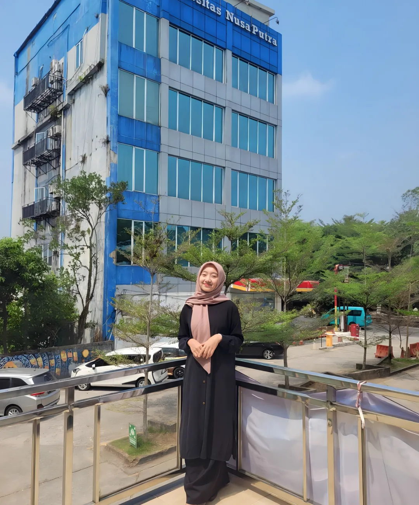
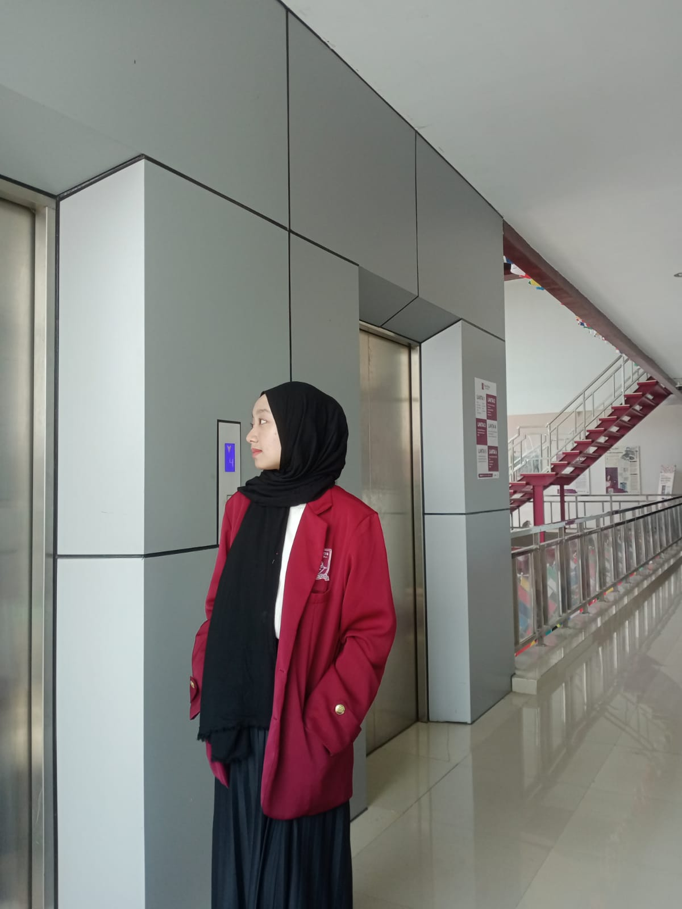

About Me
I am Nadia Sari, an Informatics Engineering student from Sukabumi, Jampang Kulon. I have mastered several programming languages and am experienced in database management and the use of graphic design tools. In addition, I also have skills in digital marketing, including online marketing strategies, social media management, and digital campaign analysis. I am active in organizations and have good communication skills, teamwork, and adaptability. I am committed to continuing to learn and develop skills in order to achieve the best results in the technology and digital fields. I am currently looking for opportunities to apply my skills in a professional environment and contribute to the success of the team.
For more details about my skills and experience, please Check out my CV.
Check out my CV
Organizations followed
Resimen Mahasiswa Mahawarman Jawa Barat Universitas Nusa Putra Kaur Administrasi Sep 2024 - Sekarang · LDK Ar Rasyid Universitas Nusa Putra Divisi PDD · Feb 2023 - Feb 2024 · Himpunan Mahasiswa Teknik Informatika Universitas Nusa Putra Sukabumi Divisi PSDM Jan 2023 - Jan 2024Divisi PSDM · Jan 2023 - Jan 2024.
Campus Instagram